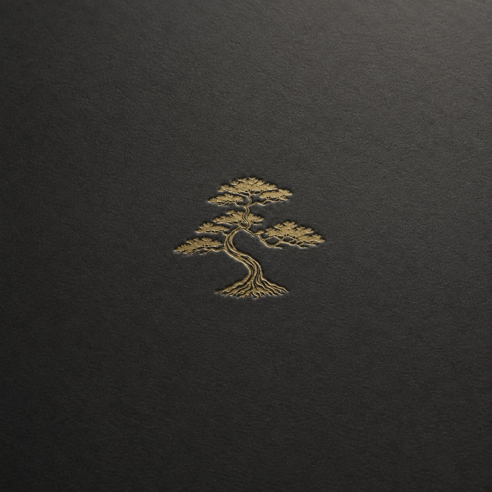
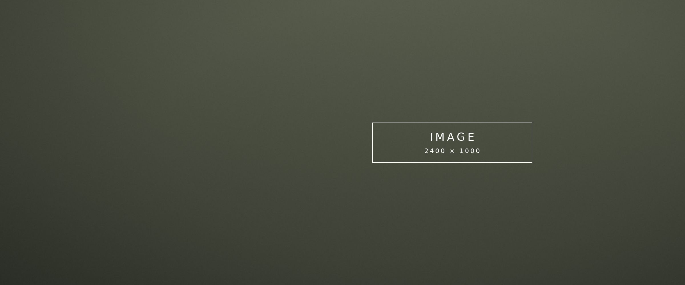

Our Clients
They understood what the house was before we did, and priced it like people who had actually walked it. Every decision came with a reason.
We had two offers above asking inside a week. What struck us was how quiet the whole process felt — nothing was ever a scramble.
The photography alone put us in a different bracket. It looked like the home we had spent nine years living in, only properly seen.

Properties, market notes and opportunities in Middle Tennessee — shared with our list before they reach the open market.
By signing up you agree to our Terms and Conditions.